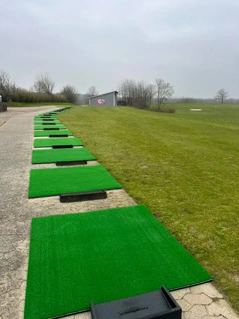

Din golfrejse
begynder her.
Golf, natur og fællesskab. Her finder du alt, du skal bruge for at komme godt i gang.
Kom godt i gang →Oversigt
Alt om din start i Tange Sø Golfklub samlet på én side.
Velkommen til GolfStart
Find det, du skal bruge – hurtigt og enkelt.
Fra første slag til golfkørekort
Golfkørekortet er din introduktion til spillet. Du øver teknik og regler og lærer at færdes trygt sammen med andre på banen.
Det præcise program og godkendelse af golfkørekort fastlægges af klubben.
Klar til at prøve golf?

Prøvemedlemskab · 895 kr.
Træning, teori og vejledning i golfens regler. Tange tilbyder både individuelle/holdforløb og weekendforløb.
Tilmeld dig hos Tange ↗Tilmelding foregår på klubbens officielle hjemmeside, ikke i demoappen.
Tryg på golfbanen
God golf handler også om sikkerhed, hensyn og god rytme. Hav udstyret klar, hold øje med andre spillere, luk hurtigere grupper igennem og reparér nedslagsmærker.
Læs altid klubbens gældende lokalregler før spil. Appen gengiver dem ikke som en permanent kopi.
Mit golfkørekort
Hold selv styr på dine aktiviteter. Din afkrydsning gemmes på denne enhed, men er ikke en officiel godkendelse.
De vigtigste golfværktøjer
Et klik til de officielle systemer og Tanges egne sider.
Ofte stillede spørgsmål
Find svar om dit begynderforløb, reglerne og hverdagen i golfklubben.
Kan jeg starte, selvom jeg aldrig har spillet golf?
Ja. Begynderforløbet er lavet til dig, der vil lære golf fra bunden. Du behøver hverken erfaring eller et handicap.
Skal jeg have egne golfkøller?
Nej. Klubben oplyser, at der er mulighed for at låne golfudstyr under prøvemedlemskabet. Tjek med klubben, hvad der følger med.
Hvilket tøj og hvilke sko skal jeg bruge?
Brug behageligt tøj efter vejret og sko med god støtte og skridsikker sål. Almindelige sportssko er typisk fine til første træning.
Hvor møder jeg op første gang?
Mød frem i god tid ved klubhuset eller det mødested, klubben oplyser i din bekræftelse. Spørg sekretariatet, hvis du er i tvivl.
Kan jeg starte alene?
Ja. Mange begynder uden at kende andre på forhånd. Træningen og klubbens begynderaktiviteter giver mulighed for at møde nye spillemakkere.
Hvad koster prøvemedlemskabet?
Det annoncerede begynderforløb står til 895 kr. Kontroller den aktuelle pris og vilkår på Tanges tilmeldingsside.
Hvordan tilmelder jeg mig?
Tryk på Tilmelding i appen. Du bliver sendt direkte til klubbens officielle formular.
Hvem underviser mig?
Morten Paulsen er angivet som pro-træner i denne app. Det konkrete holdprogram og eventuelle øvrige hjælpere oplyses af klubben.
Hvad lærer jeg til træningen?
Du lærer blandt andet greb, opstilling, puttning, korte slag og lange slag samt, hvordan du forbereder dig til at spille på banen.
Skal jeg kunne slå bolden langt?
Nej. Målet i starten er kontrol, sikkerhed og en god oplevelse – ikke at slå længst.
Hvad er golfetikette?
Det er de gode vaner på banen: vis hensyn, vær klar når det er din tur, pas på banen, vær stille når andre slår, og hold et passende spilletempo.
Skal jeg lære golfreglerne?
Ja, de vigtigste regler indgår i forløbet. I appen kan du åbne både R&A’s regler og DGU’s regelprøve.
Hvor finder jeg regelprøven?
Under Golfværktøjer finder du linket til DGU’s regelprøve. Følg klubbens anvisninger om gennemførelse.
Hvad er golfkørekortet?
Golfkørekortet viser, at du har gennemført klubbens krævede introduktion til golfspil, sikkerhed og regler. Det er klubben, der godkender dig.
Kan jeg følge med i mit forløb?
Ja. Under Mit golfkørekort kan du krydse aktiviteter af på din telefon. Det er kun dit eget overblik, ikke klubbens officielle registrering.
Hvad er forskellen på træningsbanen og golfbanen?
På driving rangen øver du slag. På golfbanen spiller du hul efter hul og følger banens regler, sikkerhed og rækkefølge.
Hvad er TIKMA COURSE?
TIKMA COURSE er klubbens Pay & Play-bane. Se den officielle baneguide og de aktuelle adgangsvilkår via appen.
Hvor skal jeg stå, når andre slår?
Stå i sikker afstand, og aldrig foran den spiller, der skal slå. Hold altid øje med andre spillere og banens retning.
Hvad gør jeg, hvis min bold flyver mod andre?
Råb straks “FORE!” tydeligt, så andre kan nå at beskytte sig.
Hvad gør jeg, hvis jeg ikke kan finde bolden?
Hold øje med tidsforbruget og de andre spillere. Følg golfreglerne, og lad eventuelt hurtigere grupper komme igennem, når det er passende.
Hvordan passer jeg på banen?
Læg opslåede tørv på plads, reparér nedslagsmærker på green og riv sandet efter bunkerbesøg, når det er relevant.
Hvor finder jeg Tanges lokalregler?
Brug linket Lokale regler under På banen. Lokalregler kan ændre sig, så det er den officielle version, der gælder.
Hvad gør jeg, hvis banen er lukket?
Tjek klubbens aktuelle banestatus, før du tager afsted. Linket findes under På banen.
Kan jeg få hjælp af erfarne medlemmer?
Ja, klubbens begynderaktiviteter er netop en mulighed for at få hjælp til at begå sig på banen. Spørg klubben, hvordan du deltager.
Hvad sker der efter golfkørekortet?
Du kan tage næste skridt mod medlemskab, spille med andre og lære at bruge Mit Golf og GolfBox til dit fortsatte golfspil.
Hvad er GolfBox?
GolfBox er et system til blandt andet golfrelaterede bookinger og information. De konkrete funktioner afhænger af din klub og adgang.
Hvad er Mit Golf?
Mit Golf er DGU’s app til golfspillere. Du finder links til iPhone og Android under Golfværktøjer.
Hvor ligger caféen?
Caféen ligger ved klubbens faciliteter. Se kontaktoplysninger, menukort og åbningstider via linket til Tanges hjemmeside.
Hvem kontakter jeg om tilmelding?
Kontakt sekretariatet på 86 65 94 20, tast 1, eller skriv til tangegolf@tangegolf.dk.
Hvordan finder jeg klubben?
Tange Sø Golfklub ligger på Tange Søvej 68, 8840 Rødkærsbro. Brug Find vej under Golfværktøjer eller Kontakt.
Mød klubben
Morten Paulsen
Pro-træner · træning og grundlæggende teknik.
Kontaktoplysninger tilføjes efter aftale.Find vej: Tange Søvej 68, 8840 Rødkærsbro
Åbn rutevejledning ↗Og når du har fået golfkørekortet?
Golf er også fællesskab
Nu starter golfrejsen for alvor. Lær GolfBox og Mit Golf at kende, find nye spillemakkere og deltag i klubbens aktiviteter.
Se medlemsmuligheder ↗